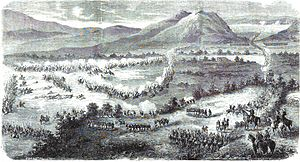

batalla del 5 de mayo
4 de mayo
batalla en atlixco

5 de mayo
batalla en puebla

-
Batalla 4 de mayo
se muestra informacion sobre esta batalla
-
Batalla 5 de mayo
Se muestra informacion sobre esta batalla
-
Inicio del conflicto
se muestran los motivos del conflicto
-
Monumentos de la batalla y/o museos de la batalla del 5 de mayo
se mencional algunos monumentos ó museos
-
Héroes de la batalla
se mencionan a los herores